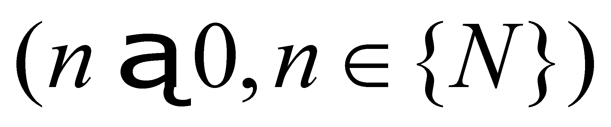

|
|
|
Taking into consideration the aforementioned issues, a contradiction seems to occur (we might call it dichotomous contradiction) between the imperative invariance necessity required by the object model, and other variation imperative need required by the process model. Every time a contradiction appears, a negotiation takes place (#), which shall eventually lead to a compromise (an equilibrium) between two contradictory demands. In chapter 8, we shall see that the biotic systems have settled this dispute favorable to the objects, the processes being represented as systems of objects. The cause of this “choice” shall be also found out in the same chapter when the general IPS will be analyzed.
Now, let us return to the objects and processes. As we have also pointed out in par.3.1, in the comment to the axiom 1, in order to exist an object, it must be created during a special type of process - that is the generation process.
Definition 4.3.1: The variation process of the quantitative value of one attribute ranging from zero (nonexistence) to a value different from zero (existence) is a specific generating process of that attribute.
Obviously, the attribute variation during a generating process is also determined against a reference, but this time, it is an absolute reference. Any of the attributes of an object must be considered as a result of a generating process specific to that attribute. These processes may be either simultaneous (multiple) or successive (spaced out in time as external composition processes), real or abstract. The scope of this paragraph is not focused on the deep analysis of the generating processes, but only on their categorization as basic processes, without whom the objects and all which derives from objects would not be able to exist. At the completion of the generating process, the invariant values of all the attributes of object Ob taken from one temporal DP with an inner reference t (which is equivalent in the common language with a singular normal value of time, that is t moment) representing the state of object Ob at that moment, according to definition 4.2.1 (if a subsequent special specification would not be made, we are dealing with realizable processes).
Comment 4.3.1: The above-mentioned specification regarding the duration of the sampling time is relevant in general circumstances, when the attributes of the considered object are variable (there are non-null processes); in this case, as we have previously mentioned, on the duration of a temporal DP any process has an insignificant (by definition) variation (it may be considered as null). If these processes are missing, the state of the analyzed object is preserved as long as the processes are null.
Definition 4.3.2: The total ensemble of the invariant attributes of an object characterized by null processes makes-up the abstract state S0 object.
We have noticed that in the sampling interval (DP support interval) of state S0 of the object Ob, the values of the object’s attributes are invariant, we are dealing therefore with a null process. Between two successive states of S0 type, which were taken at finite difference time intervals, (series of temporal concatenated DP) it might be a difference; since the two states are invariant, it means that the difference between them shall be also invariant, so the ratio between this value and the value of the support range (density of the variation distribution) shall be the attribute of a new abstract object, the state S1 whose existential attribute is the intensity of a first rank elementary process.
Moreover, an invariant difference may also exist between two successive S1 states, and then, we shall deal with a S2 state, as a temporal density of a second rank process, so on.
Definition 4.3.3: The element of n rank derived distribution of an attribute is named specific elementary process Pn of that attribute.
Definition 4.3.4: The total ensemble of the invariant attributes of a Pn -type SEP from the support interval of that process, makes-up the Sn state object  of SEP.
One may find that the state objects are a subdivision of the objects class, at which the support attribute can have only a single value (an AAV in case of the virtual objects or a normal value for the realizable objects) for S0 states, and a finite interval (a set of singular concatenated values) for Sn states.
Comment 4.3.2: The main feature (basic) of S0 states is that their related processes are null14. Due to this reason, for the variable attributes the realizable sampling time of S0 states is a single DP, only for preventing the existence of a process (in our terms, even if the process exists, the variation in the non-determination interval of DP must be under the perception threshold of IPS which analyse the process, so that the aimed attribute to be considered as invariant). If the sampling attribute is invariant, its state will be S0 along the invariance duration. Now, we can understand that the state from the definition 4.2.1 is a S0 state.
Attention! S0 states are states of some objects and Sn states are states of some even processes Pn.
Index n is the rank of the finite difference against S0 level. For making possible the unfolding of a non-null process, namely an observable property variation, the interval associated to the variation must be increased to a high enough value for allowing the occurrence of a variation, but also low enough so that the variation to be considered even, which means that the variation’s distribution density to be invariant. This attribute (distribution’s density), invariant along the support elementary time intervals is an attribute of an even specific process and because it is invariant along the duration of its support range, this is an object from class Sn. The finite difference rank which defines the state variation also grants the rank of the even specific process, therefore, we shall have processes such as P1, P2, …generally Pn just as the states temporally distributed along their course (see also annex X.6)15.
Comment 4.3.3: It is very important for the reader to understand that we might also talk about an object (obviously, an abstract one) in case of a process, although (as we have mentioned above), the two concepts seem to be contradictory. Indeed, we are facing with a contradiction when we are dealing with one and the same attribute. In the same temporal support interval, the same attribute - let us say the spatial position - cannot be invariant and variable at the same time. But if the attribute is variable and its variation rate (velocity) is constant within the process’ support interval, this rate is an invariant attribute, assigned on that support, namely, an abstract object. In the general case, although process means a distribution of some attribute variations, all the invariant attributes of the process existing in a certain support interval (such as the variation rate, direction, frequency in case of the periodic processes, etc.) shall make-up a Sn -type abstract object of that particular process.
14 Which means non-existing processes, but symbolically marked with P0 only due to the reason mentioned in comment 4.2.3, namely that the natural language provides verbs for the description of null processes.
15 The complete notation of states and processes shall mainly consist of two indexes: one already defined (first from the symbol) which denotes the class order, and the second one which represents the instance index (of the object within its class). Therefore, if we are talking about a certain k process within class n, the notation will be Pnk. This notation is also applicable to the states.
Copyright © 2006-2011 Aurel Rusu. All rights reserved.